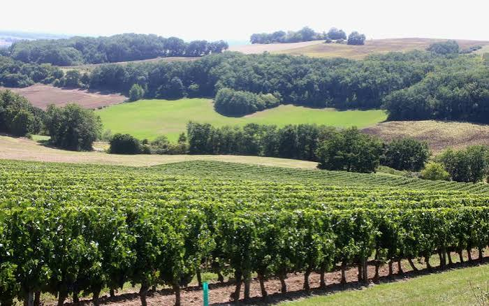

Côtes
du Brulhois


⟹ Vins & Spiritueux ⟸
Le Brulhois est un vieux pays gascon posé de part et d’autre de la Garonne, entre Agen et Valence-d’Agen, à mi-chemin de Bordeaux et de Toulouse. Son vignoble s’étend aujourd’hui sur 22 communes réparties entre trois départements : 12 en Lot-et-Garonne, 7 en Tarn-et-Garonne et 3 dans le Gers. Côté tarn-et-garonnais, c’est autour de Donzac, en Lomagne-Brulhois, que bat le cœur de l’appellation.

La vigne y est très ancienne : le plus vieux document attestant sa présence sur le territoire actuel du Brulhois remonte à l’an 1049. Au Moyen Âge, la Garonne navigable sert de grande route du vin. Les barriques descendent le fleuve sur des gabarres jusqu’au port de Bordeaux, d’où elles partent vers l’Angleterre et l’Europe du Nord.
Ces vins sont alors célèbres sous le nom de « vins noirs », en raison de leur robe presque opaque. Puissants, très colorés et riches en tanins, ils supportent bien le transport. Comme tous les vins du « Haut-Pays », ils doivent cependant composer avec les privilèges des Bordelais, qui retardent leur passage dans le port tant que la récolte girondine n’est pas vendue.
La crise du phylloxéra, à la fin du XIXe siècle, ravage le vignoble. Lors de la replantation, une partie des terres se tourne vers d’autres cultures — céréales, vergers, élevage — et la vigne se concentre sur les meilleures parcelles : les sols de hautes terrasses graveleuses et les coteaux argilo-calcaires qui dominent la vallée.
Le renouveau passe par la coopération. Les vignerons se regroupent en coopératives, et c’est aujourd’hui la Cave des Vignerons du Brulhois, dont le siège se trouve à Donzac, qui fédère la majorité d’entre eux. C’est elle qui porte le syndicat de défense de l’appellation et assure l’essentiel de la production.
La reconnaissance officielle arrive par étapes. Le vignoble obtient en 1984 le statut d’appellation d’origine vin délimité de qualité supérieure (AOVDQS) sous le nom de « Côtes du Brulhois ». En 2011, il accède à l’appellation d’origine contrôlée, désormais simplement nommée « Brulhois » ; mais l’usage populaire a conservé le nom de Côtes du Brulhois.
L’appellation est réservée aux vins tranquilles rouges et rosés. Le tannat, cépage emblématique du Sud-Ouest, y côtoie le merlot et le cabernet franc. En 2024, le cahier des charges a réintroduit l’abouriou, vieux cépage noir de la moyenne vallée de la Garonne, que les vignerons défendaient depuis longtemps comme un marqueur de leur identité.
Le terroir bénéficie d’une position charnière, à la croisée des influences atlantiques et méditerranéennes : douceur et pluies venues de l’océan, étés chauds et vent d’autan qui assainit les raisins à l’automne. C’est ce climat qui permet au tannat de mûrir pleinement et donne aux rouges leur structure.
Petite appellation discrète — environ deux cents hectares —, le Brulhois reste un vignoble à prix doux et à forte personnalité. La démarche environnementale y est largement engagée, la cave coopérative cultivant l’essentiel de ses vignes sous certification Haute Valeur Environnementale (HVE). Le « vin noir » médiéval est devenu un vin de terroir moderne, fidèle à son histoire de fleuve et de gabarres.
Le rosé : issu des mêmes cépages, il est obtenu par pressurage direct ou par saignée après une courte macération. Sa robe est saumonée, sa bouche vive et légère ; il se boit bien frais, dans l’année.
Brulhois rouge « vin noir » : cuvée de tradition, à forte proportion de tannat, de couleur sombre et de structure puissante ; à attendre quelques années.
Brulhois rouge fruité : plus marqué par le merlot et le cabernet franc, élevé en cuve, à boire jeune sur le fruit.
Brulhois rouge élevé en barrique : cuvées ambitieuses assemblant jusqu’à cinq cépages, aux notes de fruits noirs compotés, d’épices et de grillé.
Brulhois rosé : robe saumonée, arômes de petits fruits rouges, vivacité et légèreté.
Vins de pays des vignerons du Brulhois : hors appellation, la cave élabore aussi des blancs et des rosés en IGP, dont des vins originaux issus de muscat — l’AOP Brulhois, elle, ne comporte pas de vin blanc.
Le Brulhois se découvre au fil de la vallée de la Garonne, entre Lomagne tarn-et-garonnaise et Agenais.
Donzac siège de la Cave des Vignerons du Brulhois (avenue du Brulhois) : boutique ouverte toute l’année, visites des chais et dégustations sur réservation.
Layrac (Lot-et-Garonne) cellier de la cave, où sont organisées l’été des dégustations originales dans le noir complet.
Auvillar classé parmi les Plus Beaux Villages de France, ancien port sur la Garonne d’où partaient les vins vers Bordeaux ; tables et caves y proposent le vin du pays.
Marchés de producteurs de Valence-d’Agen et de Lomagne en saison, pour rencontrer les vignerons et goûter les cuvées.